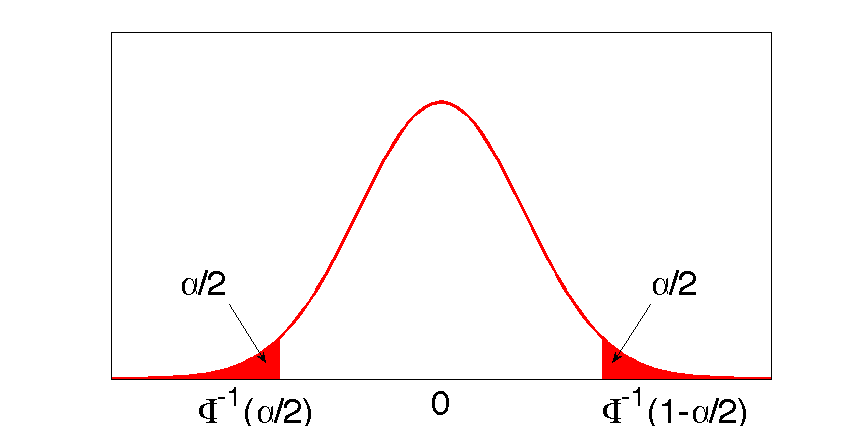

Gaussian plot with shaded tails
Plot a standard normal distribution and shade in the left and right tails together representing alpha % of the probability mass.
% This file is from pmtk3.googlecode.com function quantileDemo
scrsz = get(0,'ScreenSize'); width = 2*scrsz(3)/3; height = width/2; figure('Position',[(scrsz(3)-width)/2,(scrsz(4)-height)/2,width,height]); f = @(x)gaussProb(x, 0, 1); x = -4:0.1:4; y = f(x); plot(x,y,'r','LineWidth',3.5); axis([-4,4,0,0.5]); set(gca,'XTick',[], 'Ytick', []); shade(f,0.001, -4, -1.96, 'r', 0.005); shade(f,0.001, 1.96, 4, 'r', 0.005); annotate; printPmtkFigure normalDistAlphaRed %printPmtkFigure quantile
function annotate %annotation(gcf,'textbox','String',{'-Z_{\alpha/2}'},'FontSize',13,... annotation(gcf,'textbox','String',{'\Phi^{-1}(\alpha/2)'},'FontSize',35,... 'FitHeightToText','off',... 'LineStyle','none',... 'FontSize',35,... 'Position',[0.225 0.080 0.04908 0.03338]); annotation(gcf,'textbox','String',{'0'},'FontSize',35,... 'FitHeightToText','off',... 'LineStyle','none',... 'FontSize',35,... 'Position',[0.5 0.080 0.04908 0.03338]); %annotation(gcf,'textbox','String',{'Z_{\alpha/2}'},'FontSize',13,... annotation(gcf,'textbox','String',{'\Phi^{-1}(1-\alpha/2)'},'FontSize',35,... 'FitHeightToText','off',... 'LineStyle','none',... 'FontSize',35,... 'Position',[0.7 0.080 0.04908 0.03338]); annotation(gcf,'textarrow',[0.2694 0.3118],[0.2844 0.1486],... 'TextEdgeColor','none',... 'FontSize',35,... 'String',{'\alpha/2'}); annotation(gcf,'textarrow',[0.7639 0.7194],[0.2844 0.1486],... 'TextEdgeColor','none',... 'FontSize',35,... 'String',{'\alpha/2'}); end
end